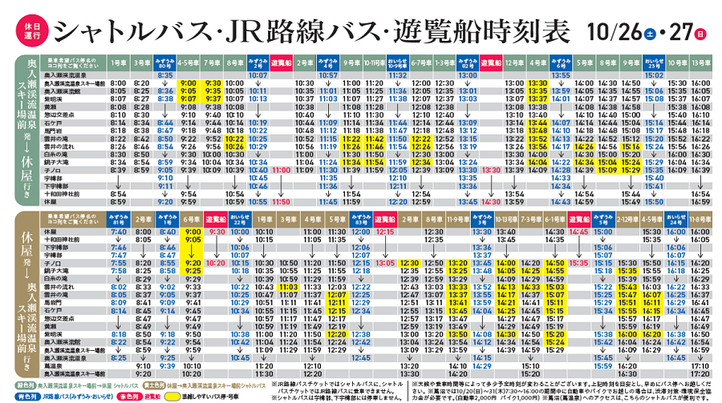

シャトルバス運行/シャトルバス・遊覧船
シャトルバス運行の目的・背景
奥入瀬渓流は、わたしたちみんなの財産。
誰もが等しくその恩恵を受ける権利があります。
しかし、その反面、観光シーズンには車が殺到して、渋滞や環境への影響を引き起こすなどの様々な問題が生じています。また、渓流沿いの国道102号は、もともと地域の生活道路や産業道路としての機能を担っていますが、渓流を迂回する道路は、大型車のすれ違いが困難な状況となっています。
シャトルバス、遊覧船のご利用について
マイカー交通規制期間は、規制区間への車両の進入はお控えください。
奥入瀬渓流へマイカー・観光バス等でお越しの際は、奥入瀬渓流温泉スキー場前駐車場（無料）・休屋駐車場（有料） に駐車の上、シャトルバス（有料）をご利用ください

シャトルバス運賃
Ticket office
シャトルバス時刻表
平日：１０月21日（月）～25日（金） 休日：１０月26日（土）・27日（日） 十和田湖遊覧船ガイド（運航コース案内）
休 屋⇔子ノ口
所要時間：50分
十和田湖畔の主要観光地・休屋と、奥入瀬渓流散策の入り口・子ノ口を結ぶコース。中山半島と中の湖、御倉半島の突端を巡ります。
■運行時間
休屋→子ノ口
9：30～14：45
子ノ口→休屋
11：00～13：30
※詳しい時刻表は以下のサイトよりご確認ください。
■通常運賃
十和田湖遊覧船（十和田観光電鉄）
大人 1,650円
小人 880円
（団体割引あり：15名以上～）
■お問い合せ（遊覧船）
十和田湖遊覧船運航事務所団体予約センター
TEL:0176-75-2909
休 屋⇔子ノ口
所要時間：50分
十和田湖畔の主要観光地・休屋と、奥入瀬渓流散策の入り口・子ノ口を結ぶコース。中山半島と中の湖、御倉半島の突端を巡ります。
■運行時間
休屋→子ノ口
9：30～14：45
子ノ口→休屋
11：00～13：30
※詳しい時刻表は以下のサイトよりご確認ください。
十和田湖遊覧船（十和田観光電鉄）■通常運賃
十和田湖遊覧船（十和田観光電鉄）
大人 1,650円
小人 880円
（団体割引あり：15名以上～）
■お問い合せ（遊覧船）
十和田湖遊覧船運航事務所団体予約センター
TEL:0176-75-2909